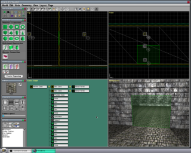
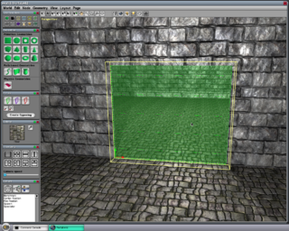
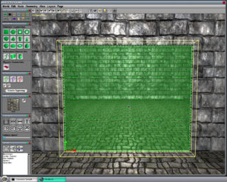
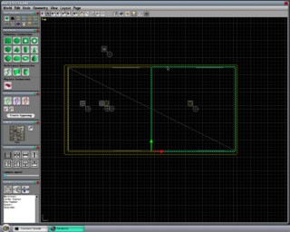
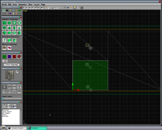
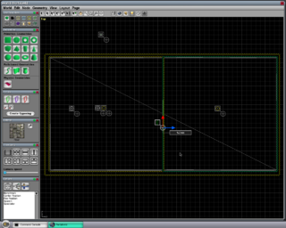

Portal Tutorial
From C4 Engine Wiki
In order to allow for arbitrarily large and complex environments, every sizable world built in the C4 Engine World Editor needs to be organized into multiple zones. The root node of a world is an infinitely large zone, and all other zones are contained within the root zone. When new zones are added to a world, they need to be connected by portals so that it's possible to see from one zone into another. This tutorial describes a simple example in which two rooms are connected by a pair of portals.
To follow this tutorial, you need the Data/Tutorial/world/Portal.wld file that is included in the C4-xxx-Data.zip distribution.
To enlarge any of the screenshots below, click on the thumbnail icon below the image. If you're using a Mac, all shortcuts that begin with the control key should be changed to the command key.
Contents |
Step 1: Prepare Portal.wld
Open Data/Tutorial/world/Portal.wld in the World Editor by typing Ctrl-O or by entering world world/Portal into the command console. The World Editor will display the scene shown in Figure 1 containing two rooms with a doorway in between.

This world contains two zones, each of which contains a very simple room with a light source in it. The world already contains portals that lead from each room into the other, so you'll need to delete them first if you want to follow the rest of this tutorial. A direct portal is shown as a greenish outline with green arrows attached to it. In the perspective viewport, portals are filled with a pattern that contains the word "PORTAL". (There are other types of portals that are different colors, but a direct portal is the basic type that lets you see from one room to another.)
To delete the two portals in this world, simply select each one and hit the Delete key. To select the portals in some viewports, it may be necessary to disable geometry and zone selection using the Node Management Page so that other types of nodes aren't inadvertently selected. There's nothing blocking our view in the Perspective viewport, though, so type Ctrl-4 to make it fill the screen, and click on the green portal in the doorway. The editor should appear as shown in Figure 2.

Hit the Delete key to delete the selected portal, and you'll notice that the back wall of the other room disappears because we can no longer see through the doorway. Hold the right mouse button in the Perspective viewport and use the WSAD keys to fly the camera through the door into the other room. The walls will appear when you've entered the other zone. Turn the camera around so you can see the doorway that you just went through, and select the other portal that looks back into the first room. The editor should appear as shown in Figure 3. Hit the Delete key to remove this portal from the world.

Step 2: Draw a New Portal
To fully connect the two zones, one portal needs to be added to the left room that looks into the right room, and another portal needs to be added to the right room that looks into the left room. (That is, portals are one-way.) We only have to draw one portal, and then the opposing portal can be created automatically by the editor.
First, switch to the Top viewport by typing Ctrl-1. Deselect the geometry type from the Node Management Page if you haven't already done so. Now select the zone for the right room, and choose Set Target Zone from the Node menu (or type Ctrl-T) to make the selected zone the current target zone. The striped zone boundary enclosing the right room will turn green to indicate that it's the current target zone. Whenever a new node is created in the World Editor, it is placed in the current target zone. The editor should now appear as shown in Figure 4.

Switch to the Front viewport by typing Ctrl-2. This looks at the level from the positive x axis, which points to the right in the Top viewport. The doorway can be seen in the center of the image.
Select the Direct Portal tool from the Portals Page, and draw a portal over the doorway as shown in Figure 5. You can click in any corner of the doorway and drag to the diagonally opposite corner.

Switch back to the Top viewport by typing Ctrl-1, and notice that the portal has been places on the left boundary of the target zone. The portal can be anywhere in the space where the two zones overlap, so this is fine.
Step 3: Connect the Portal
We need to connect the portal to the zone for the left room in order to see from the right zone to the left zone. To do this, select the Connect Tool at the top of the editor window or use the 5 key as a shortcut. The built-in %Zone connector will appear for the portal, and the editor should look like Figure 6.

%Zone connector is shown for the new portal in the Top viewport.Select the %Zone connector by clicking on its box. Then select the zone for the left zone, and type Ctrl-L to link them together. The editor should now appear as shown in Figure 7.
Switch to the Perspective viewport by typing Ctrl-4. We're still looking at the doorway from the back side, so we need to fly the camera back through to the other room by holding the right mouse button and using the WSAD keys. Once we're in the other room and the camera has been turned around, we can see our new portal. We can also see through to the other room now because the portal has been connected to the other zone.
Step 4: Create the Opposing Portal
As we noticed when we switched to the Perspective viewport, we still can't see from the left room into the right room. There is no portal that looks in that direction yet, but creating one is as simple as pressing a button. Click on the green portal to select it, and then click the Create Opposing button in the Portals Page. The opposing portal is automatically created, placed in the left zone, and connected to the right zone. If you fly the camera back through the doorway and turn around, you can now see from the left zone into the right zone.
Common Problems with Portals
- When creating new zones, make sure that one zone isn't accidentally a subzone of another when you didn't intend it to be. You can tell by looking at the node hierarchy in the Scene Graph viewport. A zone can be reparented by selecting it in the Scene Graph viewport and using the Move Tool to drag it to the proper parent zone, which is usually to infinite zone at the root of the scene.
- Make sure each portal is a subnode of the zone that it leads out of. This can also be checked in the Scene Graph viewport.
- Make sure each portal is connected to the zone that it leads into. You can tell by selecting the portal and selecting the Connect Tool (or using the 5 key as a shortcut). The
%Zoneconnector should point to the center of the destination zone.